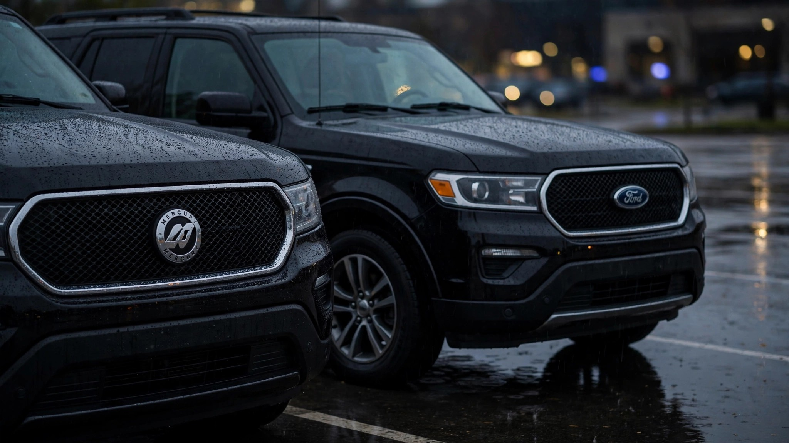

Mercury Put a Different Badge on the Ford Explorer. The Death Rate Went Up 11%.

I ran the numbers, then I ran them again, and they didn't get better.
The Mercury Mountaineer rode on the same platform as the Ford Explorer, rolled off the same assembly line at Louisville and St. Louis, shared the same V6 and V8 engines, the same transfer cases, the same frame architecture, and for most model years the same crash structure down to the bolt pattern.[1] Ford charged more for it, and the leather was genuinely nicer, the wood-grain trim unapologetically aspirational, but everything underneath was identical.
At 1.71 deaths per 100 million vehicle miles traveled, the Mountaineer's FARS fatality rate sits 11 percent above the Explorer's 1.54, a gap between two vehicles that share a skeleton.[2]
Over ten years of FARS data, that gap produced 374 Mountaineer fatalities against a fleet roughly one-eleventh the Explorer's size. Scale the Mountaineer's rate to the Explorer's fleet and the difference is not subtle: you would expect roughly 640 additional deaths, a body count large enough to populate a small town's cemetery, attributable to nothing more measurable than a badge swap and a $3,000 price premium.
Crash lethality confirms it is not just a rate artifact. When a Mountaineer appears in a fatal FARS crash, someone dies 66.2 percent of the time. For the Explorer, that figure is 57.3 percent.[2] Per-crash, the Mountaineer is 15.5 percent deadlier than the vehicle whose bones it shares. That second metric does not depend on fleet-size estimation at all; it measures what happens inside the crash, where the two vehicles' structures should be performing identically.
Toxicology barely budges the needle, which makes the gap harder to dismiss. Any-substance impairment runs 20.8 percent for the Mountaineer versus 19.5 percent for the Explorer, a gap of 1.3 percentage points that cannot plausibly explain a 15.5 percent lethality divergence.[2] Both vehicles' drivers are about equally sober. Both vehicles' drivers are about equally dead, except slightly more of the Mountaineer's occupants don't walk away.
Model year 2002 tells part of the story. That single vintage accounts for 76 of the Mountaineer's 374 deaths, more than one-fifth of the total, crammed into the model year that sat at ground zero of the Firestone tire crisis.[3] The Explorer had its own Firestone bloodbath, the rollover epidemic that killed over 270 people and generated one of the largest recalls in automotive history, but the Explorer's larger, more diversified fleet diluted the per-vehicle impact across millions of units. No such dilution for the Mountaineer: same tires, same failure mode, a fraction of the fleet to absorb the casualties.
That fraction matters in another way nobody discusses. Mercury was Ford's "mature" brand, the marque you graduated to after the Ford badge and before Lincoln. Its buyers skewed older, held their vehicles longer, and drove them deeper into the age curve where structural fatigue, degraded airbag propellant, and occupant fragility compound against one another. FARS does not record driver age by vehicle model, but the Mercury brand's entire existence was a demographic bet on drivers who were statistically more vulnerable in a crash and more likely to be driving a vehicle that had already passed its safety-engineering prime.
A fair counterargument: fleet-size estimation carries plus-or-minus 15 percent uncertainty for a vehicle like the Mountaineer, which sold roughly 50,000 units per year at its peak versus the Explorer's 400,000-plus.[2] Shift the Mountaineer's VMT estimate up by 15 percent and the rate drops to 1.49, which would make it marginally safer than the Explorer. But the lethality-per-crash metric does not have a denominator problem: 0.662 versus 0.573 requires no fleet estimate. It requires only that FARS correctly counts who died in whose vehicle, and that field has been validated for decades. Even if the rate is a measurement artifact, the per-crash gap is real.
Mercury's broader FARS ledger reinforces the pattern. At a rate of 2.29, the Grand Marquis killed 1,153 people: a Crown Victoria in a tuxedo, same car, higher body count per mile.[2] One bright spot: the Mariner, a rebadged Ford Escape, managed a rate of 0.61 versus the Escape's 0.95, one of the rare cases where the Mercury actually outperformed its Ford twin, possibly because the Mariner's buyer base, while older, drove it as a gentle suburban runabout rather than the Escape's more aggressive mixed-use profile.
Mercury is dead now, buried by Ford in 2011 as a casualty of the same bankruptcy restructuring that killed Pontiac at GM. Collectively, the Mercury fleet still recorded 1,840 deaths across FARS 2014-2023: a brand that produced its last vehicle thirteen years ago, still generating fatalities at a rate of 184 per year.[2]
Limitations: FARS captures fatal crashes only, not injury or property-damage crashes, so the Mountaineer's real-world crash survival rate across all severities is unknown. VMT estimates for the Mountaineer use industry registration and survey data that introduce meaningful uncertainty for low-volume models. FARS does not track occupant age by vehicle model, so the buyer-demographic hypothesis (older Mercury buyers are more fragile) is inferred from Mercury's market positioning, not measured directly. The 2002 model-year spike likely reflects the Firestone tire crisis but FARS does not code tire defect as a crash factor in the standard data arrays. Some option-package differences (side curtain airbags, stability control availability) varied between Mountaineer trims and may contribute to the gap independently of badge identity.
What to do: If you are still driving a 2002-2005 Mercury Mountaineer, check your VIN at nhtsa.gov/recalls. Multiple open campaigns cover these years, including Firestone-era tire replacements, airbag inflator recalls (Takata), and stability-control software updates. If your Mountaineer has original tires, original airbags, and no recall work completed, you are driving a vehicle with three separate classes of known fatal defect stacked on top of a platform that already kills at 11 percent above its twin's rate.
Sources & References
- Ford Motor Company, Mercury Mountaineer platform specifications, 1997-2010. The Mountaineer shared the U502 (1997-2001) and U251/UN152 (2002-2010) Explorer platform. wikipedia.org
- NHTSA, Fatality Analysis Reporting System (FARS), 2014–2023. All fatality rates, crash counts, toxicology, and model-year breakdowns from the embedded FARS dataset. nhtsa.gov
- NHTSA, Firestone Tire Recall and Ford Explorer Rollover Investigation, 2000-2001. 6.5 million Firestone Wilderness AT tires recalled. Over 270 deaths attributed to tread separation and rollover. nhtsa.gov
Source: NHTSA FARS 2014–2023. Fleet and VMT estimates carry ±15% uncertainty for low-volume models. Fatality rates are all-cause and do not isolate defect-related deaths. See methodology for caveats.